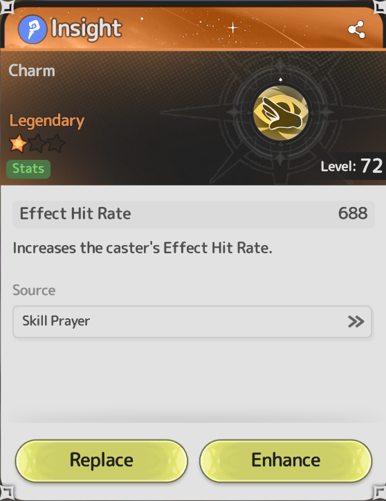

Trang chủ Đại Bách Khoa / Thư Viện Chi Tiết (Cơ Chế & Kỹ Năng) / Công Thức Chiến Đấu 4 Giai Đoạn, Đỡ Đòn vs Chính Xác & Skill Ascend
Công Thức Chiến Đấu 4 Giai Đoạn, Đỡ Đòn vs Chính Xác & Skill Ascend

Mục Lục Bài Chi Tiết
1. Công Thức Tính Sát Thương 4 Giai Đoạn & Giá Trị Kép Của ATK
ST_Cuối = [(ATK × Hệ_Số_%) + Basic_DMG] × [(ATK / (ATK + DEF_Địch)) × 0.625] × (1 + Tinh_Thông / 4000) × (1 + Σ%Tăng − Σ%Giảm) × Block/Crit
- Vì sao ATK quan trọng gấp đôi? ATK vừa nằm ở tử số nhân hệ số kỹ năng, vừa quyết định tỷ lệ xuyên giáp
ATK/(ATK+DEF). KhiATK = DEF, hệ số này là0.3125. Do đó các chiêu bỏ qua DEF như Xuyên Giáp Công Kích (Piercing Assault) bùng nổ sát thương cực mạnh lên Boss trâu giáp. - Quy đổi Tinh Thông (Mastery): Cứ
40 điểm Tinh Thông = +1% Sát Thươngtheo đúng nhánh vật lý hoặc nguyên tố. - Trần Giảm Sát Thương: Tổng giảm sát thương nhận vào tối đa đạt ngưỡng
-90%.
2. Kiểm Định Đỡ Đòn (Block) Trước Bạo Kích & Effect Hit vs Accuracy
- Đỡ Đòn kiểm tra TRƯỚC Bạo Kích:
Xác_suất_Block_Thực = Block_Địch − Chính_Xác_Bạn. Nếu đòn đánh bị Block, sát thương tụt ngay 50%+ VÀ bị tước bỏ 100% khả năng nổ Bạo Kích! - Accuracy vs Effect Hit Rate: Accuracy giúp đòn đánh thường/skill không bị Block; Effect Hit Rate đối kháng với Status Resistance để quyết định bạn có gắn được Xói Mòn (DoT), Thiêu Đốt, Đóng Băng hay Khiêu Khích lên Boss Mùa 2–3 hay không.
- Đánh Kép (Double Turn) & Cộng Dồn Khiên: Đẩy Tốc Độ (SPD) lên xấp xỉ gấp đôi đối thủ giúp bạn hành động 2 lượt liên tiếp trong 1 chu kỳ. Dòng Unique Khiên Gió trên 2 món đồ KHÔNG cộng dồn với nhau, nhưng cộng dồn 100% với Bí Thuật Khiên Áp Suất Gió!
3. Phân Tích Sao (★) vs Phẩm Chất (Rarity) & 4 Bucket Sát Thương
- Sao ★ chỉ cộng số phẳng bên phải: Tăng
15–30%phần Basic DMG (~5% tổng ST chiêu thức), không tăng hệ số%bên trái. Dùng Essential tăng Basic DMG giúp tạo sàn ST chống debuff trừ ATK. - Phẩm Chất (Rare → Immortal): Tăng CẢ
%trái lẫn Basic DMG phải: Chiến Kỹ (Technique) tăng+25%/bậc(VD Boiling Bloodlust:30% → 38% → 47% → 59% → 70%); Bí Thuật (Charm) tăng+20%/bậc(VD Blade of Lament:2.44% → 2.93% → 3.51% → 4.22%). - 4 Nhóm Sát Thương & Vòng Nguyên Tố: Gồm
Technique,Charm,BuffvàUnclassified(Pet/NPC/Gear Skill). Vòng khắc chế:Nước → Lửa → Gió → Nướcvà cặpÁnh Sáng ↔ Bóng Tối.